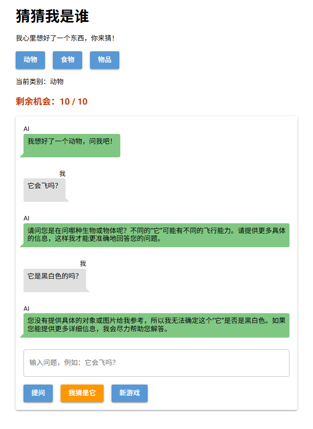

第 5 课任务
前 4 课做好了游戏的界面和规则，但问问题没有人回答。从这一课开始接入 AI：先在终端里用 Python 给 AI 发一句话、拿到回答，再把它接到"提问"按钮上。

本课完成后：AI 真的回答了，但它不知道"它"指的是什么（真实运行截图）
注意截图里 AI 的回答：它根本不知道我们在玩游戏，也不知道谜底。这是正常的，本课只负责"接通"，第 6、7 课再教它玩游戏。
| 步骤 | 做什么 | 新学的代码 |
|---|---|---|
| 第 1 步 | 认识 API 和 API Key | 概念 |
| 第 2 步 | 在终端里调用 AI | OpenAI、chat.completions.create |
| 第 3 步 | 接到"提问"按钮上 | 函数 ask_ai |
| 第 4 步 | 排错 | 三种常见报错 |
第 1 步 · 认识 API
AI 模型运行在 AI 公司的服务器上，不在你的电脑里。我们的程序通过网络把问题发过去，服务器把回答发回来。
| 名词 | 意思 |
|---|---|
| API | Application Programming Interface，应用程序接口。服务器规定好的"提问格式"，程序按格式发请求，就能拿到结果 |
| API Key | 一串以 sk- 开头的密钥，相当于账号密码。服务器靠它知道是谁在用、该从谁的额度里扣 |
| 硅基流动（SiliconFlow） | 提供 AI 模型 API 的平台，我们用它的免费模型 |
| 模型（model） | 具体用哪个 AI。我们用 Qwen/Qwen2.5-7B-Instruct（通义千问的一个免费版本） |
老师会给你硅基流动的 API Key。拿到后，就可以在程序里使用了。
难点：API Key 必须保密
别人拿到你的 key，就能用你的账号调用 AI，额度算在你头上。所以：不要把 key 发到群里、不要截图给别人、不要上传到网上。例子：要把游戏代码发给朋友时，先把 API_KEY = "sk-..." 里的 key 删掉，换成 "在这里粘贴你的 key"，让朋友填自己的。
Q1小明想把 guess_who.py 发到班级群里给大家玩。下面哪种做法最合适？
第 2 步 · 在终端里调用 AI
先安装 openai 库。它是 OpenAI 公司做的，但硅基流动用的是同样的 API 格式，所以也能用它来调用：
pip install openai新建 ai_test.py（不是游戏文件），把老师给的 key 粘贴到第 3 行的引号里：
from openai import OpenAI
API_KEY = "在这里粘贴你的 key"
client = OpenAI(api_key=API_KEY, base_url="https://api.siliconflow.cn/v1")
response = client.chat.completions.create(
model="Qwen/Qwen2.5-7B-Instruct",
messages=[{"role": "user", "content": "用一句话介绍一下企鹅"}],
)
print(response.choices[0].message.content)| 代码 | 作用 |
|---|---|
OpenAI(api_key=..., base_url=...) | 创建一个客户端（client），记住用哪个 key、连哪个服务器 |
client.chat.completions.create(...) | 发送请求，等 AI 回答。chat completions = 对话补全 |
model= | 用哪个模型 |
messages= | 发给 AI 的消息：一个列表，每条消息是一个字典 |
response.choices[0].message.content | 从返回结果里取出 AI 回答的文字 |
在终端运行 python ai_test.py，我运行了两次：
企鹅是一种生活于极地及温带地区的不会飞但 swimming 技能很强的鸟类。企鹅是一种生活在南半球的鸟类（其实它们是鸟类，尽管不会飞），体型丰满，擅长游泳。两次的真实输出，每次都不一样
Q2每条消息 {"role": "user", "content": "用一句话介绍一下企鹅"} 是一个字典。"role": "user" 表示什么？
Q3同一个程序运行两次，AI 的回答不一样。原因是什么？
第 3 步 · 接到"提问"按钮上
ask_ai 函数把调用 AI 的代码包装成函数：传进去一个问题，返回 AI 的回答。在 guess_who.py 开头加上：
import random
from nicegui import ui
from openai import OpenAI
API_KEY = "在这里粘贴你的 key"
client = OpenAI(api_key=API_KEY, base_url="https://api.siliconflow.cn/v1")
MODEL = "Qwen/Qwen2.5-7B-Instruct"def ask_ai(question):
response = client.chat.completions.create(
model=MODEL,
messages=[{"role": "user", "content": question}],
)
return response.choices[0].message.content然后在 ask 里，把原来那句"（AI 还没接上……）"换成真正的回答：
say(True, q)
box.value = ""
reply = ask_ai(q)
say(False, reply)import random
from nicegui import ui
from openai import OpenAI
API_KEY = "在这里粘贴你的 key"
client = OpenAI(api_key=API_KEY, base_url="https://api.siliconflow.cn/v1")
MODEL = "Qwen/Qwen2.5-7B-Instruct"
MAX_TRIES = 10
SECRETS = {
"动物": ["企鹅", "大象", "猫", "鲨鱼", "蜜蜂"],
"食物": ["披萨", "香蕉", "冰淇淋", "饺子", "鸡蛋"],
"物品": ["雨伞", "手机", "自行车", "吉他", "时钟"],
}
game = {"category": "动物", "secret": "", "left": MAX_TRIES, "over": False}
questions = []
def ask_ai(question):
response = client.chat.completions.create(
model=MODEL,
messages=[{"role": "user", "content": question}],
)
return response.choices[0].message.content
def say(mine, text):
with chat:
if mine:
ui.chat_message(text, name="我", sent=True)
else:
ui.chat_message(text, name="AI")
def show_left():
left_label.text = f"剩余机会：{game['left']} / {MAX_TRIES}"
def new_game():
game["secret"] = random.choice(SECRETS[game["category"]])
game["left"] = MAX_TRIES
game["over"] = False
questions.clear()
chat.clear()
show_left()
say(False, f"我想好了一个{game['category']}，问我吧！")
def choose(e):
game["category"] = e.sender.text
category.text = f"当前类别：{game['category']}"
new_game()
def ask():
q = box.value
if game["over"]:
ui.notify("这一局结束了，点「新游戏」再来一局")
elif q == "":
ui.notify("请先输入问题")
else:
questions.append(q)
say(True, q)
box.value = ""
reply = ask_ai(q)
say(False, reply)
def guess():
g = box.value
if game["over"]:
ui.notify("这一局结束了，点「新游戏」再来一局")
elif g == "":
ui.notify("请先输入你猜的东西")
else:
say(True, f"我猜：{g}")
box.value = ""
if g == game["secret"]:
game["over"] = True
say(False, f"🎉 猜对了！就是{game['secret']}！")
else:
game["left"] = game["left"] - 1
if game["left"] == 0:
game["over"] = True
say(False, f"😅 机会用完了，答案是{game['secret']}。")
else:
say(False, f"不对，不是{g}！")
show_left()
with ui.column().classes("w-full max-w-xl mx-auto"):
ui.label("猜猜我是谁").classes("text-3xl font-bold")
ui.label("我心里想好了一个东西，你来猜！")
with ui.row():
for c in SECRETS:
ui.button(c, on_click=choose)
category = ui.label("当前类别：动物")
left_label = ui.label("").classes("text-lg font-bold text-orange-700")
with ui.card().classes("w-full"):
chat = ui.column().classes("w-full")
box = ui.input(placeholder="输入问题，例如：它会飞吗？").classes("w-full").props("outlined")
with ui.row():
ui.button("提问", on_click=ask)
ui.button("我猜是它", on_click=guess).props("color=orange")
ui.button("新游戏", on_click=new_game)
new_game()
ui.run()Q4谜底明明在 game["secret"] 里，问"它会飞吗？"，AI 却反问"您是在问哪种生物或物体呢？"。为什么？
第 4 步 · 排错
Q5运行 ai_test.py，报错的最后一行是这样。最可能的原因是什么？
UnicodeEncodeError: 'ascii' codec can't encode characters in position 7-13: ordinal not in range(128)第 4 步 · 排错
Q6报错的最后一行是这样，问题出在哪里？
openai.BadRequestError: Error code: 400 - Model does not exist. Please check it carefully.第 4 步 · 排错
Q7这次的报错是 401，问题出在哪里？
openai.AuthenticationError: Error code: 401 - Token is invalid.🎉
游戏第一次接通了 AI。选择题一次答对 0 / 0。
| 代码 | 作用 |
|---|---|
client = OpenAI(api_key=..., base_url=...) | 创建客户端 |
client.chat.completions.create(model=..., messages=[...]) | 发请求给 AI |
{"role": "user", "content": "..."} | 一条用户消息 |
response.choices[0].message.content | 取出回答文字 |
| 报错 | 先检查 |
|---|---|
UnicodeEncodeError | key 填了没有 |
400 Model does not exist | 模型名 |
401 Token is invalid | key 是否完整、有效 |
下一课预告
现在的 AI 每次都只看到一个问题，问完就忘，也不知道谜底。第 6 课让 AI 记住整个对话，并在开局时悄悄告诉它谜底。